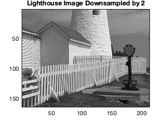
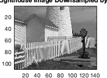
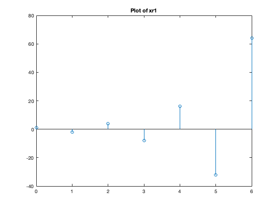
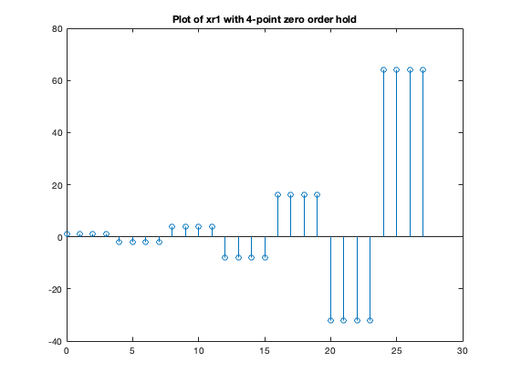
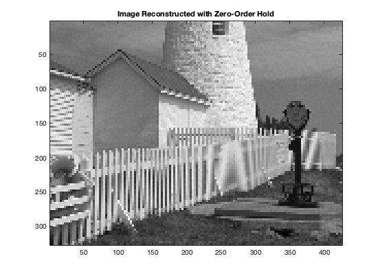
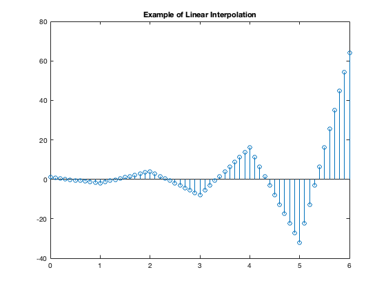
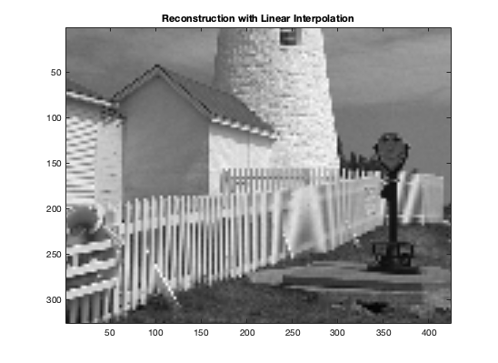

Lab Exercise 3
This exercise is about downsampling and reconstruction of an image
Contents
3.1 a)
load lighthouse; % Load image into Matlab 2-D array show_img(xx); title('Original Lighthouse Image'); xxDownsampled = xx(1:2:end, 1:2:end); % Take every other sample show_img(xxDownsampled); title('Lighthouse Image Downsampled by 2'); % Visually, aliasing appears when objects seem to merge together or morph % into something different. Information about objects in the image is lost % when there is aliasing. The downsampled image is more jagged, especially % when there are straight lines in the original image. The fence shows the % aliasing effects most dramatically.
Image being scaled so that min value is 0 and max value is 255 Image being scaled so that min value is 0 and max value is 255
b)
The fence posts act as a high freqency component. When we perform the downsampling, those high freqencies alias to a much lower frequency, causing the distortion. To avoid aliasing, we must either increase our sampling frequency to at least twice the highest frequency, or we must send the image through a low-pass filter so that condition is still satisfied.
In terms of cycles per pixel, when downsampling by two, the sample rate is 1 sample per 2 pixels or 0.5 samples per pixel. To avoid aliasing, we need to have a signal have 0.25 samples per pixel or less. Equivalently, we need the signal to have a period of 4 pixels or more. If we inspect the fence, we can see aliasing happens when there are more than one fence post per 4 pixels.
3.2
xx3 = xx(1:3:end, 1:3:end);
show_img(xx3);
title('Lighthouse Image Downsampled by 3');
Image being scaled so that min value is 0 and max value is 255
(a)
This section of code demonstrates a zero order hold
xr1 = (-2) .^ (0:6); L = length(xr1); nn = ceil((0.999:1:4*L)/4); xr1hold = xr1(nn); figure; stem(0:length(xr1)-1, xr1) title("Plot of xr1") figure; stem(0:length(xr1hold)-1, xr1hold) title("Plot of xr1 with 4-point zero order hold") % Note nn holds the values for 4 samples: 1, 1, 1, 1, 2, 2, 2, 2, ... % The interpolation factor is 4 because one point from the original signal % corresponds to 4 points after interpolation. The plot shows this idea. 
(b) Zero-order hold
% For xholdrows, we expand downsamples image horizontally, along the rows. % When using size(), the return value is an array of 2 elements. The first % is the number of rows. The second is the number of elements. xx3Size = size(xx3); rowwiseSamplePoints = ceil((0.999:1:3*xx3Size(2))/3); xholdrows = zeros(xx3Size(1), 3*xx3Size(2)); for i=1:xx3Size(1) xholdrows(i, :) = xx3(i, rowwiseSamplePoints); end show_img(xholdrows); title('Image With Rows Reconstructed by Zero-Order Hold'); % whos %(this prints the sizes of variables) % xx3 is 109x142 and xholdrows is 109x426 % xholdrows looks just like xx3 except it is stretched horizontally
Image being scaled so that min value is 0 and max value is 255
(c)
Use zero order hold to reconstruct the image
xholdrowsSize = size(xholdrows); columnwiseSamplePoints = ceil((0.999:1:3*xholdrowsSize(1))/3); xhold = zeros(3*xholdrowsSize(1), xholdrowsSize(2)); for j=1:xholdrowsSize(2) xhold(:, j) = xholdrows(columnwiseSamplePoints, j); end show_img(xhold); title('Image Reconstructed with Zero-Order Hold'); % xhold looks like a very pixelated version of 'lighthouse'. % It has the same resolution as the original but also % includes the aliasing artifacts introduced by downsampling.
Image being scaled so that min value is 0 and max value is 255
(d)
This section of code demonstrates a linear interpolation
n1 = 0:6; xr1 = (-2).^n1; tti = 0:0.1:6; %-- locations between the n1 indices xr1linear = interp1(n1,xr1,tti); %-- function is INTERP-ONE figure stem(tti,xr1linear) title('Example of Linear Interpolation'); % As can be seen by tti = 0:0.1:6;, the interpolation factor is 1/0.1 = 10.
(e)
xxlinear = linearInterpolation(xx3, 3);
show_img(xxlinear);
title('Reconstruction with Linear Interpolation');
Image being scaled so that min value is 0 and max value is 255
(f)
xxlinear is a pixelated version of 'lighthouse'. It looks very similar but many details were lost in the orignal downsampling. The reconstruction process has smoothed the edges of the original image. Linear interpolation is incapable of removing the aliasing effects.
(g)
The zero-order hold generally looks more pixelated than the linear interpolation but it is a little better at preserving the sharper edges of the original image. The biggest area of difference is along the fence, which is a high frequency component. The zero-order hold makes the edges appear sharper while the linear imterpolation smoothes it instead. The low frequency areas of the image, like the sky or the bricks on the lighthouse, looks about the same between the two reconstruction methods. Both methods work best for low frequency components and each has a different effect on high frequency components.